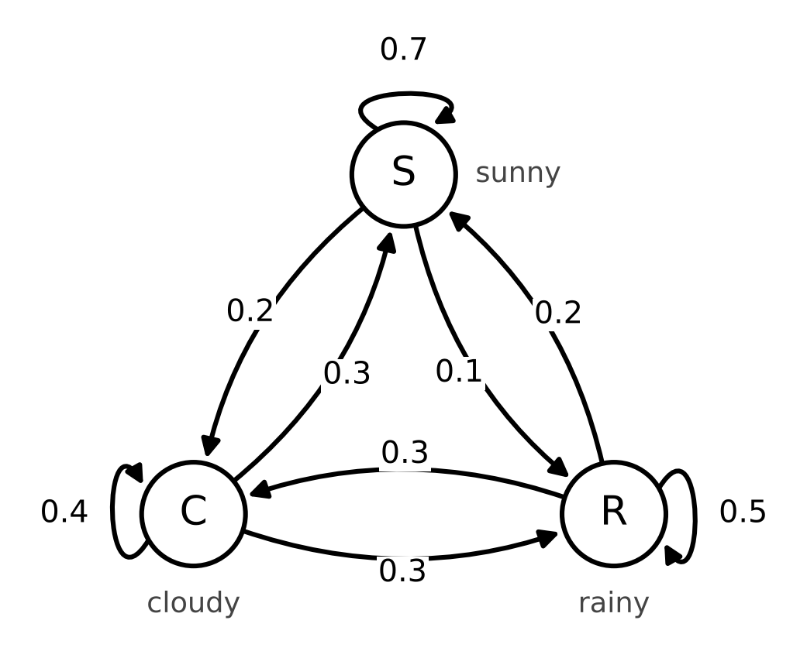
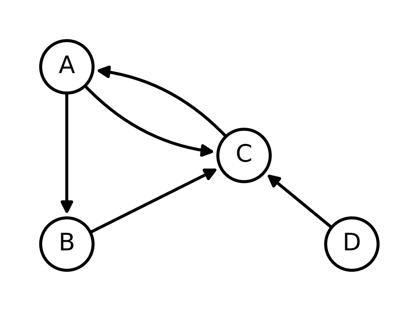
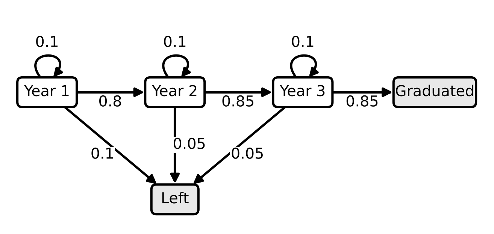

Many processes move at random between a fixed set of states: the weather from day to day, a customer between brands, a molecule between configurations, a reader between web pages. Often the chance of moving to each state depends only on where you are now, not on how you got there. Such a process is a Markov chain, and its whole behaviour is captured by one matrix. Its long-run behaviour, what fraction of the time is spent in each state, is an eigenvector.
The most famous Markov chain has billions of states. In 1998, Larry Page and Sergey Brin ranked web pages by imagining a “random surfer” clicking links forever, and measuring how often each page is visited. Their PageRank became the basis of Google’s search engine. This chapter builds the mathematics from a three-state weather model up to PageRank.
35.2 The model
Transition matrices
Number the states \(1, \dots, n\), and let \(m_{ij}\) be the probability of moving to state \(i\) at the next step, given that the process is in state \(j\) now. The transition matrix\(\M{M} = (m_{ij})\) has two properties:
every entry is between 0 and 1;
every column adds up to 1, since from state \(j\) the process must go somewhere.
A matrix like this is called column-stochastic. If \(\vect{x}_k\) lists the probabilities of being in each state at step \(k\), then by the law of total probability \[
\vect{x}_{k+1} = \M{M}\vect{x}_k,
\qquad\text{so}\qquad
\vect{x}_k = \M{M}^k\vect{x}_0.
\] Entry \((i, j)\) of \(\M{M}^k\) is the probability of being in state \(i\) after \(k\) steps, starting from state \(j\). (Many statistics books write probability vectors as rows and use the transpose, row-stochastic matrices, with \(\vect{x}_{k+1}\T = \vect{x}_k\T\M{P}\). It’s the same mathematics.)
Steady states
A steady state (or stationary distribution) is a probability vector that the chain leaves unchanged: \[
\M{M}\vect{x} = \vect{x},
\qquad
x_1 + \dots + x_n = 1,
\qquad
x_i \ge 0.
\] It is an eigenvector with eigenvalue 1. Every column-stochastic matrix has 1 as an eigenvalue, because the rows of \(\M{M} - \M{I}\) add up to the zero row, so \(\M{M} - \M{I}\) is singular (equivalently, \(\M{M}\T\vect{1} = \vect{1}\), and a matrix and its transpose have the same eigenvalues). Every other eigenvalue has \(\lvert\lambda\rvert \le 1\).
If some power \(\M{M}^k\) has all its entries positive, so that every state can reach every other in exactly \(k\) steps, the chain is called regular, and the Perron–Frobenius theorem guarantees that:
the steady state is unique, and all its entries are positive;
every other eigenvalue has \(\lvert\lambda\rvert < 1\);
from any starting distribution, \(\vect{x}_k\) approaches the steady state, with the error shrinking like \(\lvert\lambda_2\rvert^k\), where \(\lambda_2\) is the next largest eigenvalue in size (Chapter 19).
To find the steady state, solve \((\M{M} - \M{I})\vect{x} = \zerovec\) together with \(\sum x_i = 1\), or use the power method (Chapter 29): start from any probability vector and multiply by \(\M{M}\) again and again until it stops changing. For a Markov chain this is just simulating the probabilities forward.
NoteExample 1: the weather
Each day is sunny (S), cloudy (C) or rainy (R). After a sunny day, the next is sunny with probability 0.7, cloudy 0.2 and rainy 0.1; after a cloudy day, the probabilities are 0.3, 0.4 and 0.3; after a rainy day, 0.2, 0.3 and 0.5 (Figure 35.1). If today is sunny, what are the chances for the day after tomorrow? In the long run, what fraction of days are rainy?

Figure 35.1: The weather chain of Example 1. Each arrow is labelled with the probability of that change from one day to the next; the probabilities leaving each state add up to 1.
Solution. The columns are the “from” states: \[
\M{M} = \mat{0.7 & 0.3 & 0.2 \\ 0.2 & 0.4 & 0.3 \\ 0.1 & 0.3 & 0.5}.
\] Starting from \(\vect{x}_0 = (1, 0, 0)\T\), \(\vect{x}_1 = \M{M}\vect{x}_0 = (0.7, 0.2, 0.1)\T\), and \[
\vect{x}_2 = \M{M}\vect{x}_1 = \mat{0.49 + 0.06 + 0.02 \\ 0.14 + 0.08 + 0.03 \\ 0.07 + 0.06 + 0.05} = \mat{0.57 \\ 0.25 \\ 0.18}.
\] For the steady state, solve \((\M{M} - \M{I})\vect{x} = \zerovec\): \[
\begin{aligned}
-0.3x_1 + 0.3x_2 + 0.2x_3 &= 0, \\
0.2x_1 - 0.6x_2 + 0.3x_3 &= 0.
\end{aligned}
\] (The third equation is the negative of the sum of these two.) Eliminating gives \(x_1 = \tfrac{21}{12}x_3\) and \(x_2 = \tfrac{13}{12}x_3\), and scaling so that the entries add to 1, \(\vect{x} = \tfrac{1}{46}(21, 13, 12)\T \approx (0.457, 0.283, 0.261)\T\). In the long run about 26% of days are rainy. The other eigenvalues are about 0.47 and 0.13, so the forecast forgets today’s weather quickly: after a week, \(0.47^7 \approx 0.005\).
PageRank
Represent the web as \(n\) pages, with links between them. A random surfer on page \(j\) clicks one of its \(\ell_j\) outgoing links, each with probability \(1/\ell_j\). That defines a transition matrix \(\M{M}\) with \(m_{ij} = 1/\ell_j\) if page \(j\) links to page \(i\), and 0 otherwise. Two problems arise.
Dead ends: a page with no outgoing links gives a column of zeros. The fix is to let the surfer jump to a page chosen at random, replacing that column by \(\tfrac{1}{n}\vect{1}\).
Traps: a group of pages that link only to each other would capture the surfer forever, and the chain is not regular, so the steady state may not be unique.
Page and Brin’s fix for traps is damping: at each step, with probability \(d\) the surfer follows a link, and with probability \(1 - d\) they get bored and jump to a page chosen at random. The transition matrix becomes the Google matrix\[
\M{G} = d\M{M} + \frac{1 - d}{n}\vect{1}\vect{1}\T,
\] whose entries are all positive, so it is regular, with a unique steady state: the PageRank vector. Page and Brin used \(d = 0.85\).
For the real web, \(n\) is in the billions, but \(\M{M}\) is extremely sparse, and the second term never needs to be stored: \(\M{G}\vect{x} = d\M{M}\vect{x} + \tfrac{1 - d}{n}\vect{1}\) for any probability vector \(\vect{x}\). The power method needs only sparse matrix–vector products, and every eigenvalue of \(\M{G}\) other than 1 has size at most \(d\), so the error shrinks by a factor of at least 0.85 at each step: about 43 steps for every three more correct digits, whatever the size of the web. Equivalently, PageRank solves the sparse linear system \[
(\M{I} - d\M{M})\vect{x} = \frac{1 - d}{n}\vect{1}.
\]
NoteExample 2: PageRank for a small web
Four pages link as follows: A links to B and C; B links to C; C links to A; D links to C (Figure 35.2). Find the PageRank with \(d = 0.85\).

Figure 35.2: The four pages of Example 2 and their links. No page links to D.
Solution. With columns for A, B, C, D, \[
\M{M} = \mat{0 & 0 & 1 & 0 \\ \tfrac{1}{2} & 0 & 0 & 0 \\ \tfrac{1}{2} & 1 & 0 & 1 \\ 0 & 0 & 0 & 0}.
\] Solve \((\M{I} - 0.85\M{M})\vect{x} = 0.0375\,\vect{1}\). No page links to D, so its row gives \(x_D = 0.0375\): only random jumps ever reach it. Then \[
x_B = 0.0375 + 0.425x_A,
\qquad
x_C = 0.0375 + 0.425x_A + 0.85x_B + 0.85x_D,
\qquad
x_A = 0.0375 + 0.85x_C,
\] which give \(x_A \approx 0.373\), \(x_B \approx 0.196\), \(x_C \approx 0.394\) and \(x_D = 0.0375\). C ranks highest, with three pages linking to it; A is close behind, because although only one page links to it, that page is C, the most important one. A link from an important page counts for more: that is the central idea of PageRank.
Absorbing chains
Some chains end. A state that, once entered, is never left is called absorbing: the end of a game, a customer who cancels, a patient who recovers. The other states are transient. For a chain with absorbing states, the questions are no longer about the long run, but about how long the process lasts and how it ends.
Number the transient states first and the absorbing states last. The transition matrix then has the block form \[
\M{M} = \mat{\M{Q} & \M{0} \\ \M{R} & \M{I}},
\] where \(\M{Q}\) holds the probabilities of moving between transient states and \(\M{R}\) the probabilities of moving from a transient state into an absorbing one. Entry \((i, j)\) of \(\M{Q}^k\) is the probability of being in transient state \(i\) after \(k\) steps, starting from transient state \(j\), so the expected number of visits to state \(i\), counting the start, is the sum \[
\M{I} + \M{Q} + \M{Q}^2 + \dots = (\M{I} - \M{Q})^{-1}.
\] This is the matrix version of the geometric series \(1 + q + q^2 + \dots = 1/(1 - q)\), and it converges because, if every transient state can reach an absorbing one, \(\M{Q}^k \to \M{0}\). The matrix \(\M{N} = (\M{I} - \M{Q})^{-1}\) is called the fundamental matrix, and it answers both questions:
the expected number of steps before absorption, starting from transient state \(j\), is the sum of column \(j\) of \(\M{N}\);
the probability of ending in absorbing state \(i\), starting from transient state \(j\), is entry \((i, j)\) of \(\M{R}\M{N}\).
For one starting state, there is no need to form the inverse: solve \((\M{I} - \M{Q})\vect{n} = \vect{e}_j\) for column \(j\) of \(\M{N}\) (Chapter 10).
NoteExample 3: getting a degree
A three-year degree is modelled year by year. In each year, a student repeats the year with probability 0.1. Otherwise, in year 1 they progress with probability 0.8 and leave with probability 0.1; in year 2 they progress with probability 0.85 and leave with probability 0.05; and in year 3 they graduate with probability 0.85 and leave with probability 0.05 (Figure 35.3). For a new student, how many years do they spend at university, on average, and how likely are they to graduate?

Figure 35.3: The degree of Example 3 as an absorbing Markov chain. Graduated and Left (shaded) are absorbing: once there, a student stays.
Solution. The transient states are years 1, 2 and 3; the absorbing states are graduated and left. The columns are the “from” states: \[
\M{Q} = \mat{0.1 & 0 & 0 \\ 0.8 & 0.1 & 0 \\ 0 & 0.85 & 0.1},
\qquad
\M{R} = \mat{0 & 0 & 0.85 \\ 0.1 & 0.05 & 0.05}.
\] Each column of \(\M{Q}\) and \(\M{R}\) together adds up to 1. A new student starts in year 1, so solve \((\M{I} - \M{Q})\vect{n} = \vect{e}_1\): \[
\mat{0.9 & 0 & 0 \\ -0.8 & 0.9 & 0 \\ 0 & -0.85 & 0.9}\mat{n_1 \\ n_2 \\ n_3} = \mat{1 \\ 0 \\ 0}.
\] The matrix is lower triangular, so forward substitution (Chapter 13) gives \(n_1 = 1/0.9 \approx 1.111\), then \(n_2 = 0.8n_1/0.9 \approx 0.988\), then \(n_3 = 0.85n_2/0.9 \approx 0.933\). These are the expected numbers of years spent in each year of study, so the expected time at university is \[
n_1 + n_2 + n_3 \approx 3.03 \text{ years}.
\] The only way to graduate is from year 3, with probability 0.85 per year spent there, so the probability of graduating is \(0.85n_3 \approx 0.793\): this is the first entry of \(\M{R}\vect{n}\). The second entry, \(0.1n_1 + 0.05n_2 + 0.05n_3 \approx 0.207\), is the probability of leaving, and the two add up to 1, as they must.
35.3 Explore
The app shows a web of six pages. Bigger circles have higher PageRank, computed by the power method, and the table compares it with the fraction of time a simulated random surfer spends on each page.
import numpy as np# Example 1: the steady state of the weatherM = np.array([[0.7, 0.3, 0.2], [0.2, 0.4, 0.3], [0.1, 0.3, 0.5]])values, vectors = np.linalg.eig(M)values, vectors = values.real, vectors.real # all real here; eig returns complex arraysk = np.argmax(values) # the eigenvalue 1steady = vectors[:, k] / vectors[:, k].sum() # scale to add to 1print(np.round(values, 4), steady)# Example 2: PageRank by the power methodL = np.array([[0, 0, 1, 0], # L[i, j] = 1 if page j links to page i [1, 0, 0, 0], [1, 1, 0, 1], [0, 0, 0, 0]])n, d =4, 0.85Mw = L / L.sum(axis=0) # divide each column by its number of linksx = np.ones(n) / nfor k inrange(100): x = d * (Mw @ x) + (1- d) / nprint(x)# Example 3: an absorbing chainQ = np.array([[0.1, 0, 0], [0.8, 0.1, 0], [0, 0.85, 0.1]])R = np.array([[0, 0, 0.85], [0.1, 0.05, 0.05]])N = np.linalg.inv(np.eye(3) - Q) # the fundamental matrixprint(N.sum(axis=0)) # expected years, from each starting yearprint(R @ N) # P(graduate), P(leave), from each starting year
% Example 1: the steady state of the weatherM= [0.70.30.2;0.20.40.3;0.10.30.5];[V,D] =eig(M);[~,k] =max(real(diag(D)));% the eigenvalue 1steady=V(:,k) /sum(V(:,k)) % scale to add to 1% Example 2: PageRank by the power methodL= [0010;1000;1101;0000];% L(i,j) = 1 if page j links to page in=4;d=0.85;Mw=L./sum(L,1);% divide each column by its number of linksx=ones(n,1) /n;fork=1:100x=d* (Mw*x) + (1-d) /n;endx% Example 3: an absorbing chainQ= [0.100;0.80.10;00.850.1];R= [000.85;0.10.050.05];N=inv(eye(3) -Q);% the fundamental matrixyears=sum(N,1) % expected years, from each starting yearoutcome=R*N% P(graduate), P(leave), from each starting year
This code assumes every page has at least one link; a dead end would give a column of zeros and a division by zero, and needs the fix described above (exercise 6).
No. With columns as the “from” states, each column must add up to 1, and the first adds up to 1.1.
TipWhat would go wrong with PageRank, without damping, on a web with a trap?
The random surfer would eventually enter the trap and never leave, so all the rank would pile up on the trapped pages, and the steady state need not be unique. Damping lets the surfer jump anywhere, which makes every entry of \(\M{G}\) positive and the steady state unique.
TipIn Example 3, why does a student starting in year 2 graduate with a higher probability than a new student?
A student in year 2 has already survived the risk of leaving in year 1, the largest risk in the model. Column 2 of \(\M{R}\M{N}\) gives their chance of graduating as 0.892, against 0.793 for a new student.
35.6 Key ideas
A transition matrix holds the probabilities of moving between states; with columns as the “from” states, each column adds up to 1.
The probabilities after \(k\) steps are \(\M{M}^k\vect{x}_0\).
A steady state is an eigenvector with eigenvalue 1. For a regular chain it is unique, and every starting distribution approaches it.
PageRank is the steady state of a random surfer who sometimes jumps to a random page; the damping makes it unique.
For an absorbing chain, the fundamental matrix \((\M{I} - \M{Q})^{-1}\) gives the expected times until absorption and, through \(\M{R}(\M{I} - \M{Q})^{-1}\), the probability of each final outcome.
35.7 Exercises
A machine is either working (W) or broken (B). A working machine breaks down by the next day with probability 0.1; a broken one is repaired by the next day with probability 0.6. Write down the transition matrix, and find the long-run fraction of days the machine works.
Show that if \(\M{M}\) is column-stochastic and \(\vect{x}\) is a probability vector, then \(\M{M}\vect{x}\) is also a probability vector. (Hint: check the two conditions separately. Each entry of \(\M{M}\vect{x}\) is a sum of products of non-negative numbers; for the total, add up the entries of \(\M{M}\vect{x}\) column by column.)
Show that \(\mat{0 & 1 \\ 1 & 0}\) is a transition matrix with a steady state, but that \(\M{M}^k\vect{x}_0\) doesn’t approach it from \(\vect{x}_0 = (1, 0)\T\). Which condition of the Perron–Frobenius theorem fails?
Code. Write a PageRank function that handles dead ends, by treating a page with no links as linking to every page. Apply it to the Dead end web of the app (A links to B and C; B to C; C to nothing; D to A and C; E to D and F; F to D and E), and check your results against the app.
Absorbing chains are used to price loans that may default, to estimate how long patients stay in each stage of an illness, and to analyse games. Kemeny and Snell’s Finite Markov Chains is the classic account.
Langville and Meyer’s Google’s PageRank and Beyond tells the full story of PageRank, including how it is computed for the whole web and how people tried to manipulate it.
Markov chain Monte Carlo methods, central to modern statistics and physics, design a Markov chain whose steady state is a probability distribution you want to sample from, then simulate it.
Hidden Markov models, in which the states can’t be observed directly, underlie speech recognition and the analysis of DNA sequences.